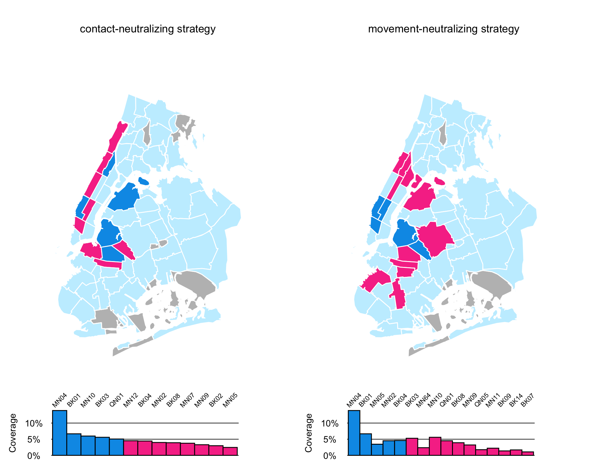
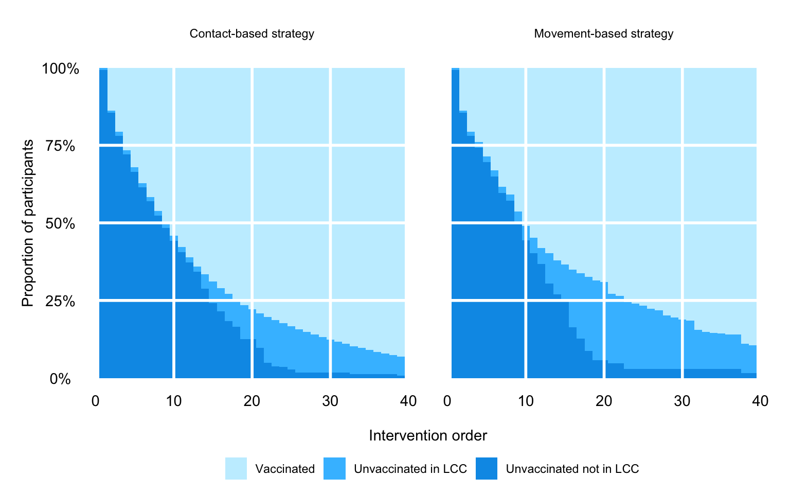

9 Outbreak interventions

9.0.1 Spatial efficiency
Figure 9.1 shows which community districts would have to be immunized to immunize 33% of the population (Group A), and 66% of the population (Group A + Group B) under both the contact-neutralizing and movement-neutralizing intervention strategies.
Under the contact-neutralizing strategy, it would take five community districts to immunize 33% of the population. These are MN04, BK01, MN10, BK03, and QN01. To reach 66% of participants with the intervention, it would be necessary to immunize 13 community districts. The additional community districts would be MN12, BK04, MN02, BK08, MN07, MN09, BK02, and MN05.
Under the movement-neutralizing strategy, it would take six community districts to reach 33% of the population: MN04, BK01, MN05, BK04, MN02, and BK03. It would take 16 community districts to reach 66% of the population. The additional community districts would be: MN64, MN10, QN01, BK08, MN09, QN05, BK09, MN11, BK14, and BK07.
9.0.2 Spatial network impact
Figure 9.2 shows that nearly 100% of individuals are included in the largest connected component before any intervention. For the movement-neutralizing strategy, the proportion of the population included in the largest connected component declines more sharply than for the contact-neutralizing strategy as more community districts are immunized. In the contact-neutralizing strategy, the overall proportion of unvaccinated individuals declines more sharply than in the movement-neutralizing strategy. There is not a noticeable difference between the two strategies for the first 10 community districts to be immunized - differences between the two strategies start emerging once 10 community districts are immunized.
